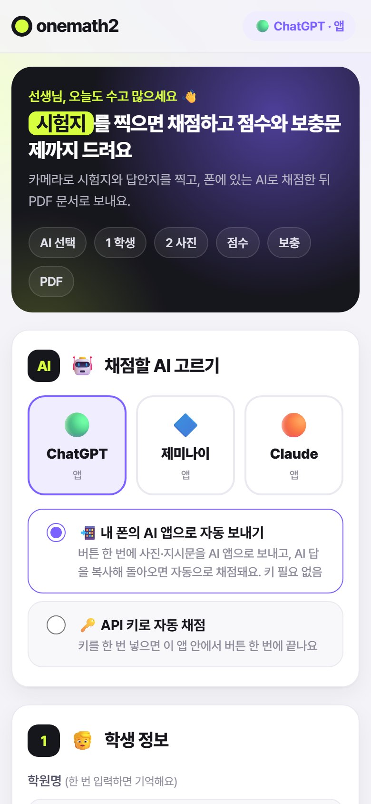
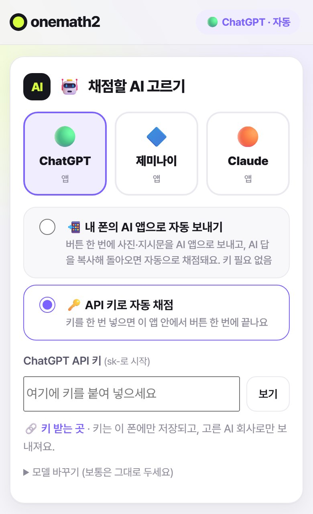
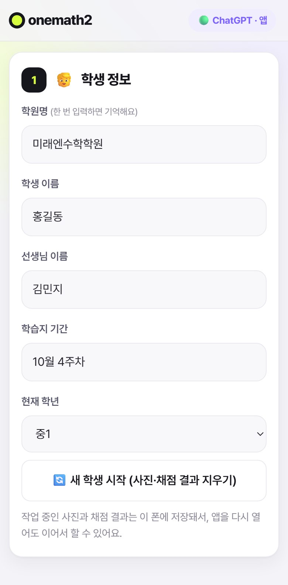
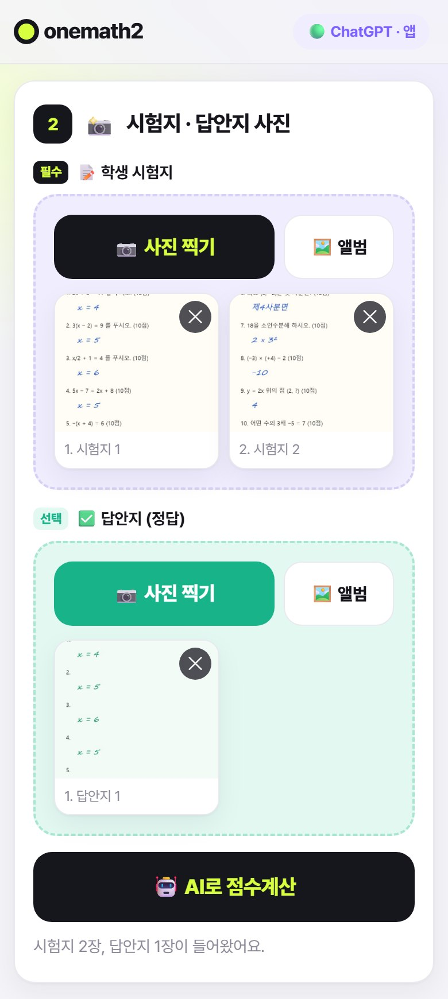
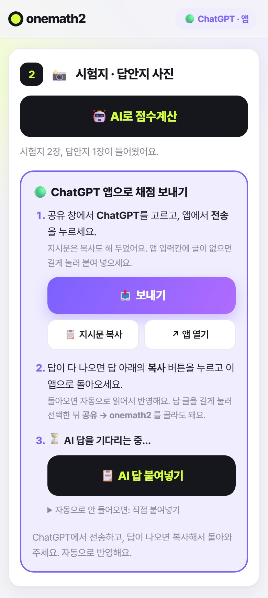
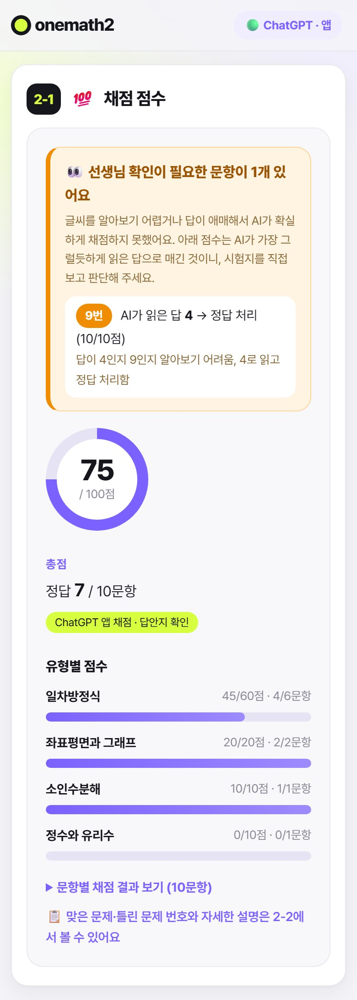
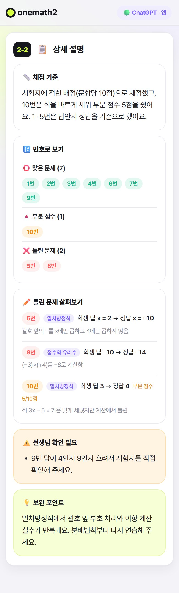
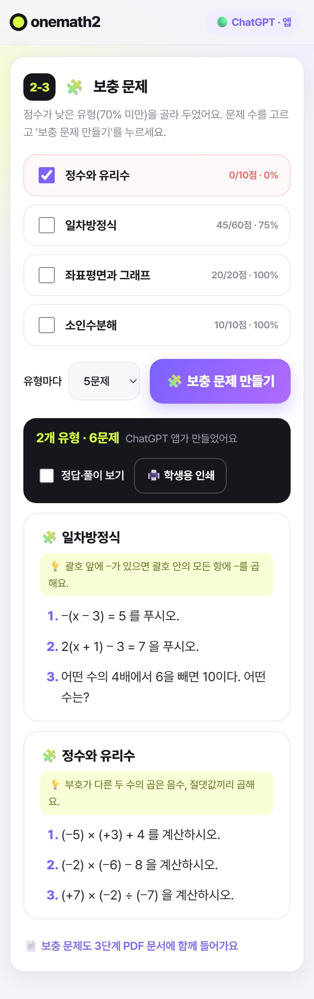
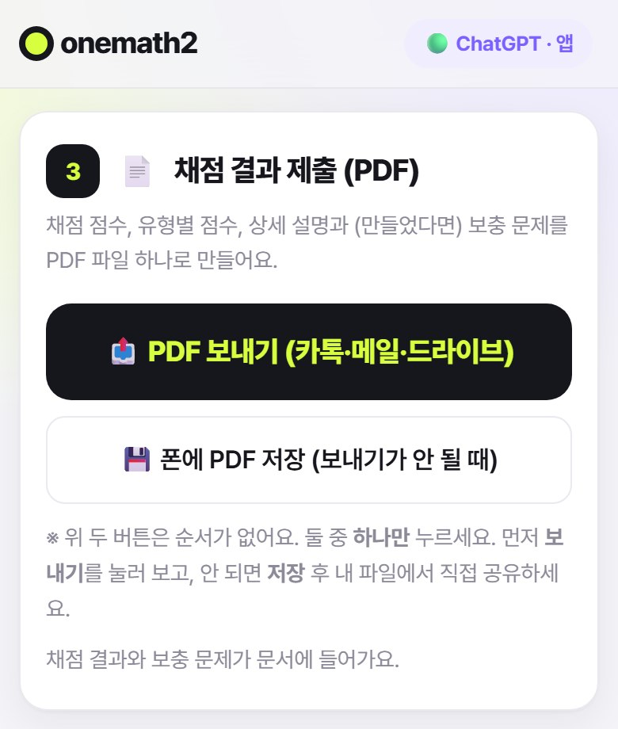
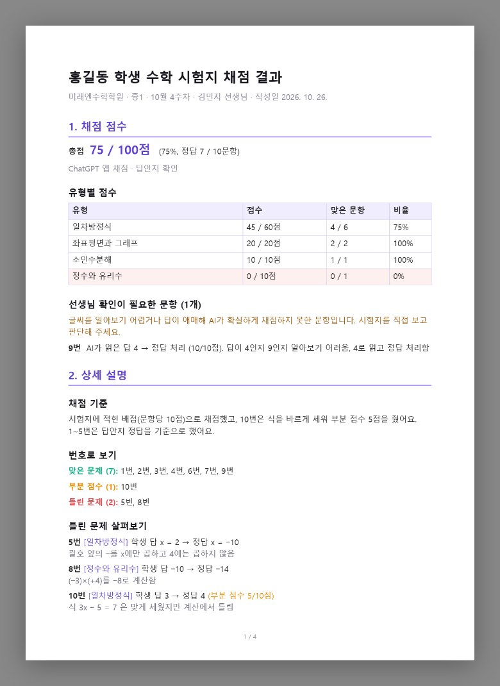

✓ 한눈에 보기
화면을 위에서 아래로 내려가며 차례대로 채우면 끝나요. 한 학생에 보통 3~5분 걸립니다.
- AI 고르기처음 한 번만. 쓰고 있는 AI 앱을 골라요
- 학생 정보이름·단원명 입력
- 사진 찍기학생 시험지 (+ 정답지)
- AI로 점수계산AI 앱으로 보내고 답 받기
- 결과 확인점수·틀린 이유·보충 문제
- PDF 보내기카톡·메일로 학부모께
0 처음 한 번만: 폰에 설치하기
학원에서 받은 앱 주소(https://로 시작)를 폰에서 열고, 홈 화면에 앱으로 추가해 두세요.
- 안드로이드(크롬): 주소를 열고 오른쪽 위 ⋮ → 홈 화면에 추가 또는 앱 설치
- 아이폰(사파리): 주소를 열고 아래쪽 공유 버튼 □↑ → 홈 화면에 추가
AI 채점할 AI 고르기
맨 위 칸이에요. 한 번 고르면 폰이 기억하니 다음부터는 건너뛰어도 됩니다.

- 평소 쓰는 AI를 누르세요: ChatGPT · 제미나이 · Claude. 보라색 테두리가 생기면 선택된 거예요.
- 그 아래에서 연결 방식을 고르세요. 처음이라면 📲 내 폰의 AI 앱으로 자동 보내기를 추천해요.
- 오른쪽 위 작은 표시(예: ChatGPT · 앱)로 지금 설정을 언제든 확인할 수 있고, 누르면 이 칸으로 돌아와요.
📲 AI 앱으로 자동 보내기 추천
폰에 설치된 AI 앱(구독 중인 앱 그대로)으로 사진을 보내 채점해요. 키 필요 없음. 보내고 받는 건 앱이 자동으로 하고, 선생님은 AI 앱에서 전송과 복사만 눌러 주시면 돼요.
🔑 API 키로 자동 채점
AI 회사에서 받은 API 키를 한 번 넣으면, AI 앱에 갈 필요 없이 이 앱 안에서 버튼 한 번으로 끝나요. 사용한 만큼 요금이 나와요(제미나이는 무료 등급 있음).

API 키 방식을 쓸 때만
- 🔗 키 받는 곳 링크를 눌러 AI 회사 사이트에서 키를 만들고 복사하세요.
- 키 칸을 길게 눌러 붙여 넣으면 "키를 이 폰에 저장했어요"가 떠요. 앞뒤 띄어쓰기가 없어야 해요.
- 모델 바꾸기는 보통 그대로 두세요.
1 학생 정보 입력
여기 적은 내용이 PDF 맨 위 제목과 작성 정보로 들어가요.

- 학원명: 처음엔 "양덕롯데캐슬교실"이 들어 있어요. 바꾸지 않으면 그대로 쓰이고, 바꾸면 폰이 기억해요.
- 학생 이름, 선생님 이름(비우면 "담임 선생님"으로 표시), 주제학습 단원명(예: 일차방정식)을 적어요.
2 시험지 · 답안지 사진 찍기
학생이 푼 시험지는 꼭, 정답지는 있으면 함께 찍어요.

- 📝 학생 시험지 칸의 📷 사진 찍기를 누르면 카메라가 열려요. 찍고 확인을 누르면 한 장이 들어가요.
- 여러 장이면 📷를 다시 눌러 이어서 찍으세요. 최대 10장까지 한 시험지로 이어서 채점해요.
- ✅ 답안지(정답) 칸도 같은 방법으로 찍어요. 선택이라 없어도 되지만, 넣으면 AI가 정답지를 기준으로 채점해서 더 정확해요.
- 미리 찍어 둔 사진은 🖼️ 앨범으로 여러 장을 한꺼번에 고를 수 있어요. 잘못 넣은 사진은 오른쪽 위 ✕로 지워요.
🤖 AI로 점수계산: AI와 어떻게 연결되나요?
사진 칸 아래 🤖 AI로 점수계산을 누르면 시작돼요. 고른 연결 방식에 따라 흐름이 달라요.
📲 AI 앱으로 자동 보내기 방식
- onemath2 🤖 AI로 점수계산을 누르면, 사진과 지시문을 자동으로 준비해요
- ① 공유 창 목록에서 쓰는 AI 앱을 골라요
- ② 내 폰의 AI 앱 전송을 누르면 AI가 채점해요
- ③ 복사 AI 답 아래 복사 버튼을 누르고 돌아와요
- ④ 자동 채점 앱이 클립보드의 답을 읽어 점수·설명을 만들어요

- 🤖 AI로 점수계산을 누르면 바로 폰의 공유 창이 떠요. 목록에서 고른 AI 앱(예: ChatGPT)을 누르세요. ① 선생님
- AI 앱이 열리면서 사진과 지시문이 들어가 있어요. 전송을 누르면 AI가 채점을 시작해요. ② 선생님
입력칸에 글이 비어 있으면, 지시문이 이미 복사되어 있으니 입력칸을 길게 눌러 붙여넣기 후 전송하세요. - AI 답이 다 나오면 답 아래(또는 코드 칸)의 복사 버튼을 누르고 onemath 앱으로 돌아오세요. ③ 선생님
- 돌아오기만 하면 앱이 복사한 답을 자동으로 읽어서 점수를 계산해요. "✅ AI 답을 자동으로 받아 채점했어요"가 뜨면 끝! ④ 자동
| 할 일 | 누가 |
|---|---|
| 사진·지시문 준비, 사진에 이름표 붙이기 | 앱이 자동 |
| 채점 요청 글(지시문) 쓰기·복사 | 앱이 자동 |
| 공유 창에서 AI 앱 고르기, 전송, 답 복사 | 선생님 |
| 답 읽기 → 총점·유형별 점수·상세 설명 만들기 | 앱이 자동 |
아이폰: 보안상 자동 읽기가 막혀 있어서, 돌아와서 📋 AI 답 붙여넣기 → 붙여넣기를 한 번 눌러 주세요.
제미나이: 제미나이가 앱 화면 위에 작은 창으로 떠서 열렸다면, 답을 복사하고 제미나이 창을 닫은 뒤 onemath 화면을 한 번 톡 눌러 주세요. 그때 자동으로 읽어요.
다른 방법 (안드로이드, 홈 화면에 설치한 경우): AI 답 글을 길게 눌러 선택 → 공유 → onemath2를 고르면 앱이 열리면서 바로 반영돼요.
🔑 API 키 방식
버튼을 누르고 1~2분 기다리면 끝이에요. 화면에 "✏️ ChatGPT가 시험지를 채점하고 있어요…"가 보이는 동안 앱을 닫지 말고 기다려 주세요. AI 앱에 갈 필요가 없어요.
2-1 채점 점수와 상세 설명 보기
채점이 끝나면 화면이 자동으로 결과로 내려가요.

2-1 채점 점수
- 👀 선생님 확인이 필요한 문항 (주황색 칸): 글씨가 흐리거나 답이 애매해서 AI가 확실하게 채점하지 못한 문항이에요. AI가 어떻게 읽었는지 적혀 있으니 시험지를 직접 보고 판단해 주세요. 없으면 이 칸은 나오지 않아요.
- 총점: 동그란 그래프와 정답 문항 수. 덧셈은 AI가 아니라 앱이 직접 계산해서 틀리지 않아요.
- 유형별 점수: 단원별 막대그래프로, 어느 단원이 약한지 한눈에 보여요.
- ▶ 문항별 채점 결과 보기를 누르면 번호마다 학생 답·정답·점수 표가 펼쳐져요.

2-2 상세 설명
- 📏 채점 기준: 배점을 어떻게 적용했는지, 답안지를 기준으로 했는지 적혀 있어요.
- 🔢 번호로 보기: 맞은 문제(초록), 부분 점수(주황), 틀린 문제(빨강) 번호. 학생에게 오답 번호를 알려 줄 때 편해요.
- ✏️ 틀린 문제 살펴보기: 학생 답 → 정답, 그리고 왜 틀렸는지 한 문장으로 알려 줘요. (예: "괄호 앞의 −를 x에만 곱함")
- ⚠️ 선생님 확인 필요, 💡 보완 포인트: 가장 먼저 복습할 부분을 짚어 줘요. 상담할 때 그대로 활용하세요.
2-3 보충 문제 만들기
학생이 틀린 내용을 바탕으로, 약한 유형만 골라 연습 문제를 만들어요.

- 점수가 70% 미만인 유형은 미리 체크되어 있어요. 더 연습시키고 싶은 유형을 추가로 체크해도 돼요.
- 유형마다 3·5·10문제 중에서 고르고 🧩 보충 문제 만들기를 누르세요.
- AI 앱 방식이면 채점 때와 똑같이 공유 창 → AI 앱에서 전송 → 복사 → 돌아오기로 자동 반영돼요. API 키 방식이면 기다리기만 하면 돼요.
- 정답·풀이 보기를 켜면 정답과 풀이가 보이고, 🖨️ 학생용 인쇄를 누르면 앞쪽은 문제지, 뒤쪽은 선생님용 정답·풀이로 인쇄돼요.
3 채점 결과 PDF로 보내기
점수, 유형별 점수, 상세 설명, 보충 문제까지 PDF 파일 하나로 만들어 학부모님께 보내요.

- 📤 PDF 보내기 (카톡·메일·드라이브)를 누르면 공유 창이 떠요. 카카오톡을 골라 학부모님 대화방으로 보내거나, 메일·구글 드라이브를 고르세요.
- 보내기가 안 되는 폰이면 💾 폰에 PDF 저장을 누르세요. 다운로드 폴더(아이폰은 '파일' 앱)에 저장되니, 거기서 파일을 길게 눌러 공유하면 돼요.
두 버튼은 순서가 없어요. 둘 중 하나만 누르면 됩니다. 파일 이름은 학생이름_단원명_채점결과.pdf로 만들어져요.

PDF에 들어가는 내용
- 제목: ○○○ 학생 수학 시험지 채점 결과, 학원명·단원명·선생님·작성일
- 1. 채점 점수: 총점, 유형별 점수 표(70% 미만은 분홍색), 선생님 확인 필요 문항
- 2. 상세 설명: 채점 기준, 맞은·틀린 번호, 틀린 이유, 보완 포인트, 문항별 결과표
- 3. 보충 문제 (만들었다면): 문제와 답 쓰는 칸, 새 페이지에 정답과 풀이
↻ 다음 학생 채점하기
- 1단계 학생 정보 아래의 🔄 새 학생 시작 (사진·채점 결과 지우기)를 누르세요.
- 학생 이름·단원명·사진·채점 결과·보충 문제가 지워져요. 학원명, 선생님 이름, AI 설정은 그대로 남아요.
- 학생 이름을 적고 사진부터 다시 찍으면 돼요.
? 자주 묻는 질문
공유 창에 AI 앱이 안 보여요.
목록 끝의 더보기(또는 편집)에서 찾아보세요. 그래도 없으면 안내 칸의 💾 사진 저장과 📋 지시문 복사를 누른 뒤 ↗ 앱 열기로 AI 앱을 열어, 사진을 올리고 지시문을 붙여 넣으세요.
돌아왔는데 점수가 자동으로 안 나와요.
AI 답의 복사 버튼을 눌렀는지 확인하세요. 아이폰이거나 클립보드 권한을 거절했다면 📋 AI 답 붙여넣기를 누르세요. 그래도 안 되면 자동으로 안 들어오면: 직접 붙여넣기를 열어 칸을 길게 눌러 붙여 넣고 결과 반영을 누르세요.
"결과(JSON)를 찾지 못했어요" / "답이 중간에 끊겼어요"가 떠요.
AI 답 전체가 복사되지 않은 경우예요. AI 앱에서 "JSON을 처음부터 끝까지 다시 써 줘"라고 보낸 뒤, 코드 칸의 복사 버튼으로 다시 복사해 오세요.
"지금 클립보드에는 보낸 지시문이 들어 있어요"라고 나와요.
AI 답이 아니라 앱이 보낸 지시문이 아직 복사되어 있다는 뜻이에요. AI 앱으로 돌아가 답 아래의 복사 버튼을 누르고 다시 오세요.
AI 앱에 다녀왔더니 앱이 처음부터 다시 열렸어요.
걱정하지 마세요. 학생 정보·사진·기다리던 요청이 저장되어 있어서 그대로 이어져요. 답을 복사해 왔다면 자동으로 반영돼요. (12시간이 지난 작업은 이어지지 않아요)
시험지 사진을 바꿨더니 점수가 사라졌어요.
사진이 바뀌면 이전 점수가 맞지 않아서 지워져요. AI로 점수계산을 다시 눌러 주세요.
"API 키가 맞지 않아요" / "사용량이 넘쳤어요"가 떠요.
키를 다시 복사해 넣으세요(앞뒤 띄어쓰기 없이). 사용량 초과는 무료 사용량을 넘었거나 결제가 필요한 상태예요. 잠시 뒤 다시 하거나 AI 앱으로 보내기 방식을 쓰세요.
시험지 사진과 채점 결과는 어디에 저장되나요?
이 폰 안에만 저장돼요. 앱 서버에는 아무것도 저장되지 않고, 사진은 채점할 때 고른 AI 회사로만 보내져요.